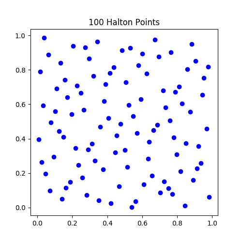
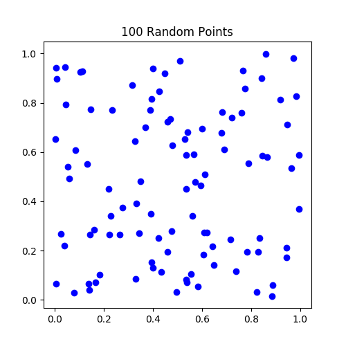
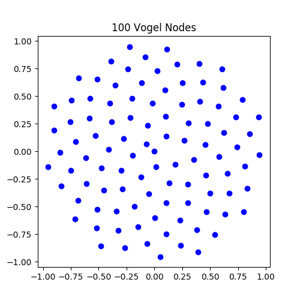
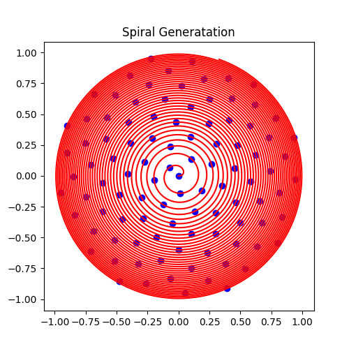

This article is a collection of methods for choosing points for RBF interpolation and RBF-FD.
- Uniform Grids
- Halton Points
- Vogel Nodes
- References
Uniform Grids
Halton Points
Halton points are pseudorandomly generated points that mimic uniformly distributed random points except that they do not cluster. They were developed by J.H. Halton in 1960 and rely on prime numbers[2]. The implementation we use was developed by John Burkhardt[1] and can be downloaded here.
 Vogel Nodes
The Vogel nodes are nodes that are somewhat evenly spaced on the disk. They are generated by choosing points along a spiral every $\pi(3-\sqrt{5})$ radians. Specifically, the coordinates for $n$ points on the unit disk are given by $$ x_i = \sqrt{\tfrac{i}{n}}\cos(i\hat{\theta}) \\ y_i = \sqrt{\tfrac{i}{n}}\sin(i\hat{\theta}) $$ where $\hat{\theta} = \pi(3-\sqrt{5})$.
 Vogel Nodes on a Sphere
Distributing nodes on a sphere is slightly different. See this stack exchange question for details.
References
- John Burkardt. Halton. 2016. URL: https://people.sc.fsu.edu/~jburkardt/py_src/halton/halton.html.
- J.H. Halton. On the efficiency of certain quasi-random sequences of points in evaluating multi-dimensional integrals. Numerische Mathematik, 2:84–90, 1960. URL: http://eudml.org/doc/131448.